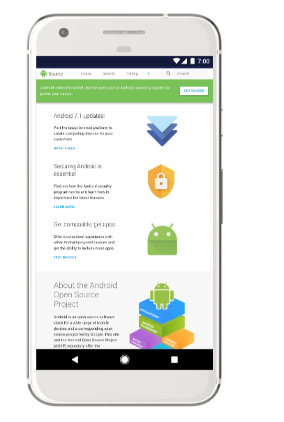

This page describes significant revisions to source.android.com. For a complete list of changes to this site refer to the Android Open Source Project (AOSP) docs/source.android.com log.
August 2018
Hello and welcome to the revised Android Open Source Project (AOSP) website. As our site has grown, we’ve reorganized the platform documentation navigation to better accommodate new and updated information.
Please see the subsections below for a guide to major changes. See the Release Notes for feature summaries, updates, and additions. Send us your feedback via bugs filed at g.co/androidsourceissue or by clicking the Site Feedback link in the footer of every page on the site.
Second horizontal menu
The most sweeping change is the introduction of a second horizontal menu of tabs within the site’s navigation to better expose deeper pages. Now, instead of left navigation menus containing dozens of entries, each subtab contains a small list of sections and pages directly relevant to the associated topic identified in the subtab.
Note we have not yet updated directory paths and URLs for existing documentation to avoid breaking bookmarks and external links… yet. In time, we will make these changes and institute redirects accordingly. So revisit the site for new locations and update bookmarks as you find changes.
Setup to Set up
The main Set up tab has been renamed slightly from Setup to match the verbs used for subsequent primary tabs. Download and Build contents have been split into distinct subtabs to ease access to the pages they contain. The Develop subsection has been renamed as a Create subtab to avoid confusion with the new top-level Develop tab of the same name.
The information previously found on the Compatibility > Contact Us page has been merged into the main Set up > Contact (Community) list.
Compatibility to Design
The information formerly found on the Compatibility top-level tab can now be found under Design. See the Compatibility subtab for an overview of that program and links to the new Android Compatibility Definition Document (CDD).
In a related change, instructions for the Android Compatibility Test Suite (CTS) and general debugging information have been moved to a new Tests subtab. Display and Settings menu guidelines have been shifted to dedicated subtabs.
Porting to Develop
The Porting tab has been renamed Develop to better convey the instructions this tab contains. Largely focused upon implementing individual interfaces, this documentation helps you write the drivers necessary to connect your device to the Android operating system.
As a result, the Architecture section describing the overarching HIDL format has been moved to the Design tab for consideration during the planning phase, earlier in the development cycle. The Bootloader contents now live under Design > Architecture, while an Interaction subtab has been introduced to contain Input, Sensors, and related information.
The Connectivity section has been reorganized to include Bluetooth and NFC, Calling and Messaging, Carrier, and Wi-Fi subsections. In addition, the Wi-Fi section includes the following new articles:
Tuning to Configure
The Tuning tab has been renamed Configure to encapsulate more than customization and optimization steps. The former Device Administration subsection is now found under Enterprise. The ART and Dalvik contents reside under ART, and Over-the-air (OTA) update information lives under Updates.
December 2017
Android 8.1 has been released! See the entries below for the major platform features introduced in this release.
AAudio and MMAP
AAudio is an audio API that has enhancements to reduce latency when used in conjunction with a HAL and driver that support MMAP. See AAudio and MMAP for documentation describing the hardware abstraction layer (HAL) and driver changes needed to support AAudio's MMAP feature in Android.
ART configuration changes
The WITH_DEXPREOPT_BOOT_IMG_ONLY makefile option was removed
from the Android runtime (ART) in Android 8.1 and replaced with the
WITH_DEXPREOPT_BOOT_IMG_AND_SYSTEM_SERVER_ONLY option that
pre-optimizes the system server jars, as well as the boot classpath. See
Configuring ART for
the deprecation notice.
Biometric unlock security measurements
Android 8.1 introduces two new metrics associated with biometric unlocks that are intended to help device manufacturers evaluate their security more accurately: Imposter Accept Rate (IAR) and Spoof Accept Rate (SAR). See Measuring Biometric Unlock Security for example attacks and test methodology.
Boot time optimizations
Starting in Android 8.1, power saving setting for components like UFS and
CPU governor can be disabled to improve device boot times. See Optimizing Boot
Times for the new init.*.rc settings.
Color management
Android 8.1 adds support for color management that can be used to provide a consistent experience across display technologies. Applications running on Android 8.1 can access the full capabilities of a wide gamut display to get the most out of a display device. See Color Management for instructions on implementing, customizing, and testing this feature.
OpenGLRenderer configuration simplification
In Android 8.1 and later, only the ro.zygote.disable_gl_preload
property still applies to OpenGLRenderer configuration. All other
properties have been removed. See OpenGLRenderer Configuration for the
notice and previously supported properties.
Retail demo mode made easy
Through Device Policy Manager, Android 8.1 supports demonstrating device functionality in retail stores via a demo-type user role. See Retail Demo Mode for implementation instructions.
TEXTCLASSIFIER
Android 8.1 introduces the TextClassfier API that uses machine learning techniques to help developers classify text. See TEXTCLASSIFIER for implementation instructions.
Time zone rules
Android 8.1 provides a new mechanism for device manufacturers (OEMs) to push updated time zone rules data to devices without requiring a system update. This mechanism enables users to receive timely updates and OEMs to test time zone updates independently of system image updates. See Time Zone Rules for instructions on applying these updates.
Wi-Fi Aware
The Wi-Fi Aware feature in Android 8.1 enables supporting devices to connect to one another directly over Wi-Fi without internet or cellular network access. This feature allows easy sharing of high-throughput data among trusted devices and apps that are otherwise off network. See Wi-Fi Aware for examples, source files, and links to additional documentation.
November 2017
The Source section has been renamed to Setup. Redirects are in place to ensure the old URLs still work.
September 2017
This site has been released in China at source.android.google.cn. All non-reference materials have also been translated into Simplified Chinese for ease of use.
August 2017
Android 8.0 has been released! This section describes the major new features in the Android 8.0 platform.
Architecture
Treble
Android 8.0 includes support for Treble, a major re-architect of the Android OS framework designed to make it easier, faster, and less costly for manufacturers to update devices to a new version of Android. Documentation includes details on the HAL interface definition language (HIDL), a new ConfigStore HAL, Device Tree Overlays, the Vendor Native Development Kit (VNDK), Vendor Interface Objects (VINTF), Modular Kernel requirements, and the Vendor Test Suite (VTS) and Infrastructure.
FunctionFS support
FunctionFS (FFS) is a USB gadget function that is designed and controlled through user space. Its support allows all of the function- and protocol-specific code to live in user space, while all of the USB transport code lives in the kernel. Using FFS moves Media Transfer Protocol (MTP) implementation into user space.
On the frameworks side, most of the major changes exist in MtpServer. The USB driver interface has been refactored into two different classes, one that uses the old kernel driver and one that uses FFS. MtpServer is then able to use that driver interface without needing to know the details of implementation. The FFS driver writes the USB descriptors to a file when the server starts up; it then writes data to endpoint files similar to the kernel driver use.
Kernel enhancements to LLDB/C++ debugging
The Android 8.0 release includes kernel enhancements that help developers create better applications by improving their debugging experience. For more information, see Implementing kernel enhancements to LLDB/C++ debugging.
Kernel hardening
Upstreamed kernel hardening features and tools to find bugs in kernel drivers. For more information, see Kernel Hardening.
Optimizing SquashFS at the kernel level
SquashFS is a compressed read-only filesystem for Linux, suitable for use on the system partition. The optimizations in this document help improve the performance of SquashFS. For more information, see Optimizing SquashFS at the Kernel Level.
ART and Dalvik
Fuzz testing
AOSP offers a new fuzzing testing suite for testing the Android runtime (ART) infrastructure. The new toolset, JFuzz and an improved DexFuzz, are directly available in AOSP now with accompanying documentation. See: https://android.googlesource.com/platform/art/+/master/tools/jfuzz/README.md https://android.googlesource.com/platform/art/+/master/tools/dexfuzz/README
Nothing is required to implement or use the new tools. You may make changes to the tools if required, just like you can make changes to the runtime/compiler already.
VDEX files: Improve system update performance
VDEX files improve the performance and user experience of software updates.
VDEX files store pre-validated DEX files with verifier dependencies so that
during system updates ART does not need to extract and verify the DEX files
again. No action is needed to implement this feature. It is enabled by
default. To disable the feature, set the ART_ENABLE_VDEX
environment variable to false.
ART performance improvements
The Android runtime (ART) has been improved significantly in the Android 8.0 release. This document summarizes enhancements device manufacturers can expect in ART. For more information, see Improving ART Performance in Android 8.0.
Android A/B OTA updates
This update answers common questions device manufacturers have regarding Android A/B (seamless) system updates. For more information, see A/B updates frequently asked questions.
Automotive
Bluetooth connection management
Android 8.0 provides Bluetooth connection management in in-vehicle infotainment systems for a more seamless Bluetooth user experience. For more information, see Bluetooth connection management.
Bluetooth multi-device HFP
Bluetooth multi-device connectivity lets users connect multiple devices to telephony profiles in an Android Automotive IVI Bluetooth. For more information, see IVI Connectivity.
Vehicle Camera HAL
Describes the design of an exterior view system (EVS) stack and provides the HAL specification for supporting the acquisition and presentation of vehicle camera data. For more information, see Exterior View System (EVS) Vehicle Camera HAL.
Bluetooth
See the updated Bluetooth overview.
Verifying and debugging Bluetooth
For details on how to verify and debug the native Bluetooth stack, see Verifying and Debugging.
Bluetooth services
Bluetooth provides a variety of features that enable core services between devices, such as audio streaming, phone calls, and messaging. For more information about the Android Bluetooth services, see Bluetooth Services.
BLE advertising
Bluetooth 5 supports different modes of data advertisements for Bluetooth Low Energy, including higher bandwidth or increased range. For more information, see Bluetooth Low Energy Advertising.
Bluetooth support for audio codecs
The Android 8.0 release includes support for Bluetooth high-definition audio codecs. For more information, see Advanced audio codecs.
Camera
Critical camera features
The Android 8.0 release contains these key enhancements to the Camera service: shared surfaces, enable multiple surfaces sharing the same OutputConfiguration System API for custom camera modes, and onCaptureQueueEmpty. For more information, see Camera Version Support.
Configuration
Ambient capabilities
Capabilities allow Linux processes to drop most root-like privileges, while
retaining the subset of privileges they require to perform their function.
Ambient capabilities allows system services to configure capabilities in their
.rc files, bringing all their configuration into a single file.
For more information, see
Implementing Ambient
Capabilities.
Privileged permission whitelist requirement
Starting in Android 8.0, all privileged apps must be explicitly whitelisted in
system configuration XML files in the /etc/permissions directory.
If they are not, then the device will boot, but the device implementation will
not pass CTS. For more information, see
Privileged Permission
Whitelist Requirement.
Implementing USB HAL
The Android 8.0 release moves handling of USB commands out of init scripts and into a native USB daemon for better configuration and code reliability. For more information, see Implementing USB HAL.
Connectivity
Customizing device behavior for out-of-balance users
Android devices with no data balance allow network traffic through, requiring carriers and telecoms to implement mitigation protocols. This feature implements a generic solution that allows carriers and telcos to indicate when a device has run out of balance. For more information, see Customizing device behavior for out-of-balance users.
Debugging
Enabling sanitizers in the Android build system
Sanitizers are compiler-based instrumentation components to use during development and testing in order to identify bugs and make Android better. Android's current set of sanitizers can discover and diagnose memory misuse bugs and potentially dangerous undefined behavior. For more information, see Enabling Sanitizers in the Android Build System.
Recover devices in reboot loops
Android 8.0 includes a feature that sends out a "rescue party" when it notices core system components stuck in crash loops. Rescue Party then escalates through a series of actions to recover the device. For more information, see Rescue Party.
Storaged
Android 8.0 adds support for storaged, an Android native daemon
that collects and publishes storage metrics on Android devices. For more
information, see Implementing
Storaged.
Display
Air Traffic Control for floating windows
Android 8.0 introduces Air Traffic Control for floating windows in order to simplify and unify how apps display on top of other apps. Everything necessary to use the feature is included in the AOSP.
Air Traffic Control allows developers to create a new (managed) floating layer/window type for apps to use to display windows on-top of other apps. The feature displays ongoing notifications for all apps using a floating layer that lets the user manage the alert window.
The Android Compatibility Test Suite (CTS) confirms:
- The current alert window types are:
TYPE_PHONE,TYPE_PRIORITY_PHONE,TYPE_SYSTEM_ALERT,TYPE_SYSTEM_OVERLAY, orTYPE_SYSTEM_ERROR. - Apps targeting the Android 8.0 SDK won't be able to use the window types
above to display windows above other apps. They will need to use a new
window type
TYPE_APPLICATION_OVERLAY. - Apps targeting older SDKs can still use the current window types; however,
the windows will be z-ordered below the new
TYPE_APPLICATION_OVERLAYwindows. - The system can move or resize windows in the new layer to reduce clutter.
- Device manufacturers must keep the notification that lets users control what is displayed over other apps.
Launching activities on secondary displays
Virtual displays are available to everyone, and they don't require any special hardware. Any application can create an instance of virtual display; in the Android 8.0 release, activities can be launched on that virtual display if the associated feature is enabled.
To support multi-display features, you should either use one of the
existing supported ways of connecting secondary devices or build new hardware.
The supported ways of connecting displays on Nexus and Pixel devices are
Google Cast and
virtual
displays inside apps. Support of other ways depends on kernel driver
support for each particular case (like MHL or DisplayPort over USB-C) and
fully implementing interface definitions that are related to displays in
HardwareComposer HAL (IComposerCallback.hal and
IComposerClient.hal).
Each of the ways may require SoC or OEM support. For example, to enable DisplayPort over USB-C, both hardware (SOC) and software (drivers) support is required. You might need to implement drivers for your hardware to support connecting external displays.
The default implementation will allow launching fullscreen stacks of activities on secondary displays. You can customize the stacks and System UI and behavior on secondary displays.
Support for generic tooltip
Android 8.0 allows developers to provide descriptive action names and other
helpful information on mouse hover over buttons and other icons. Device
manufacturers may style the tooltip popup. Its layout is defined in
android/frameworks/base/core/res/res/layout/tooltip.xml.
OEMs may replace the layout or change its dimensions and style parameters. Use only text and keep the size reasonably small. The feature is implemented entirely inside the View class, and there are quite exhaustive CTS tests that check many aspects of Tooltip behavior.
Support for extended aspect ratio
Android 8.0 includes a new manifest attribute, maxAspectRatio, which lets an activity or app specify the maximum aspect ratio it supports. maxAspectRatio replaces the previous meta-data tag with a first-class API and allows devices to support an aspect ratio greater than 16:9.
- If an activity or app is resizable, allow the activity to fill the screen.
-
If an activity or app is non-resizeable or the platform is force resizing
the activity, allow the app window to display up to the maximum aspect ratio,
according to the
maxAspectRatio
value.
- For applications on devices running Android 8.0, the default value is the aspect ratio of the current device.
- For applications on devices running earlier versions of Android, the default value is 16:9.
Implementing Adaptive Icons
Adaptive Icons maintain a consistent shape intra-device but vary from device to device with only one icon asset provided by the developer. Additionally, icons support two layers (foreground and background) that can be used for motion to provide visual delight to users. For more information, see Implementing Adaptive Icons.
Night Light
Night Light, introduced in Android 7.0.1, allows users to reduce the amount of blue light that their screen emits. Android 8.0 gives users more control over the intensity of this effect. For more information, see Implementing Night Light.
Picture-in-picture
Android 8.0 includes support for picture-in-picture (PIP) on Android handheld devices. PIP allows users to resize an app with an ongoing activity, such as a video, into a small window. For more information, see Picture-in-Picture on Android handsets.
Better split-screen interactions
Multi-window lets multiple apps simultaneously display on users' device screens. Android 8.0 improves the default mode, split-screen, by compressing the top pan and resizing the launcher if a user taps Home after entering split-screen. For more information, see Better Split-Screen Interactions.
Add Widgets/Shortcuts
A new API in Android 8.0 allows application developers to add shortcuts and widgets from inside the app instead of relying on the widget tray. The older method of adding shortcuts by sending a broadcast has been deprecated for security reasons. For more information, see Implementing Add Widgets/Shortcuts.
Downloading and building
Android LLVM Toolchain improvements
OEMs who wish to use our latest toolchain/tools must ensure that their private code compiles successfully with the updated toolchains. This may require them to fix existing issues in their code with undefined behavior. (Of course, they are free to use whatever tools they prefer to compile their own code too.)
They must ensure their code is free of undefined behavior (by using tools like UBSan), so they are less susceptible to problems caused by newer toolchains. All of the toolchains are always updated directly in AOSP. Everything will be available well before OC even ships, so OEMs should be following along already.
See the public Clang/LLVM documentation for general instructions and the Android Clang/LLVM documentation set within AOSP for Android-specific guidance. Finally, join the android-llvm public group to get help and take part in development.
DRM/KMS
DRM/KMS in Linux Kernel Version 4.9
The Direct Rendering Manager (DRM)/Kernel Mode Setting (KMS) framework used by Android is developed and maintained by Linux kernel developers in the Linux kernel. Android merges down from the Linux kernel. By merging down from our common kernel, device manufacturers gain the DRM/KMS framework automatically.
DRM/KMS became viable in Linux kernel version 4.9, and Android strongly encourages OEM partners to use DRM/KMS starting with this kernel version. Atomic Display Framework (ADF), the display framework officially supported by Android today, will not be supported in 4.9 and higher versions of the common Android kernel; instead, Android will support DRM/KMS from this version. OEMs can continue to use ADF (or any other framework), but Android will not support them in the common Android kernel.
To implement DRM/KMS, you will need to write your own drivers using DRM/KMS in addition to merging down the DRM/KMS framework from the android common kernel.
Keystore
Keymaster 3
Android 8.0 updates Keymaster, the keystore HAL, by extending the capabilities of hardware-backed key storage on Android devices. This builds upon the Android 7.1.2 updates to Keymaster 2. For more information, see Keymaster 3 documentation.
Security enhancements
Insecure TLS version fallback removed from HttpsURLConnection
Insecure TLS/SSL protocol version fallback is a workaround for buggy implementations of TLS protocol downgrade negotiation in some servers. This is vulnerable to POODLE. When Chrome 45 dropped the insecure fallback in September 2015, less than 0.01% of servers relied on it. To improve security, insecure TLS version fallback has been removed from HttpsURLConnection in Android 8.0. For more details, see this blog post.
To test this feature on devices with Android 8.0, run this CTS test case:
cts-tradefed run cts -m CtsLibcoreOkHttpTestCases
Performance
Flash wear management
Describes eMMC behavior and new features to help OEMs lower the risk of a failing eMMC in the automotive environment. For more information, see Flash Wear Management in Android Automotive.
Optimizing boot times
Guidance for improving boot times for specific Android devices. For more information, see Optimizing boot times.
Task Snapshots
Task Snapshots is infrastructure introduced in Android 8.0 that combines screenshots for Recents Thumbnails as well as Saved Surfaces from Window Manager to save memory. For more information, see Task Snapshots.
Peripherals
Default print services
A print service is an app that discovers and presents printers to a device's print framework. In earlier Android versions, users had to search for and install third-party print services to be able to print.
Android 8.0 includes a default print service in
platform/packages/services/BuiltInPrintService/
that lets users print on modern printers without installing additional apps.
This implementation supports printers that use the Internet Printing Protocol
(IPP) to communicate with the printer and use PCLm, PWG-Raster, or PDF to send
printable content. For older printers, users should install the app
recommended by the
PrintRecommendationService
as seen in
this I/O
presentation.
Reference updates
The Reference section has been added to the top-level navigation. As part of the Treble release, a HIDL reference section was added. The Trade Federation and the legacy HAL reference documentation has been updated.
Settings menu
Settings: Patterns and components
In Android 8.0, the Settings menu gains several components and widgets that cover common uses. For more information, see Patterns and Components.
Settings: Updated information architecture
Android 8.0 introduces a new information architecture for the Settings app. The goal of the new information architecture is to simplify the way settings are organized and make it easier for users to quickly find the settings needed to customize their Android devices. For more information, see Implementing Updated Information Architecture.
Personalized Settings
The Android Settings app provides a list of suggestions to the users. This feature provides ranking for suggestions, based on any contextual signal or the user's past interactions with suggestions. For more information, see Personalized Settings.
Implementing Settings: Universal search
Android 8.0 adds expanded search capabilities for the Settings menu. This document describes how to add a setting and ensure it is properly indexed for Settings. For more information, see Universal Search.
Storage
Faster storage statistics
Android 8.0 leverages the ext4 filesystem's quota support to return disk usage statistics almost instantly. For more information, see Implementing faster storage statistics.
April 2017
Welcome to a new source.android.com! The site has been overhauled to make it easier for you to navigate, search, and read its ever-growing set of information. Here is a summary of enhancements:
More screen real estate, larger type size
The entire site is wider, allowing you to view more content at once. Code samples and commands are more visible, and all text has been enlarged.
Mobile-ready view
The new site renders more cleanly on handheld devices with a dedicated mobile view.
New top-level tabs
The former Devices tab has been renamed Porting, while the old Core Technologies subtab has been renamed Tuning and moved to the top of the site for better exposure.
Security at the forefront
With an ever-increasing focus on security in Android, the Security tab has been moved forward (next to Source) to reflect its importance.
Better reference materials
Hardware Abstraction Layer and Trade Federation reference materials are available directly from a top-level Reference tab.
Persistent code links
The AOSP code repository is just a click away with the Go to Code button at the top right of every page.
Comprehensive footers
In addition to the existing About, Community, and Legal footers, you can now find a complete list of links at the bottom of every page for building Android, connecting with the ecosystem, and getting help with the operating system's use.